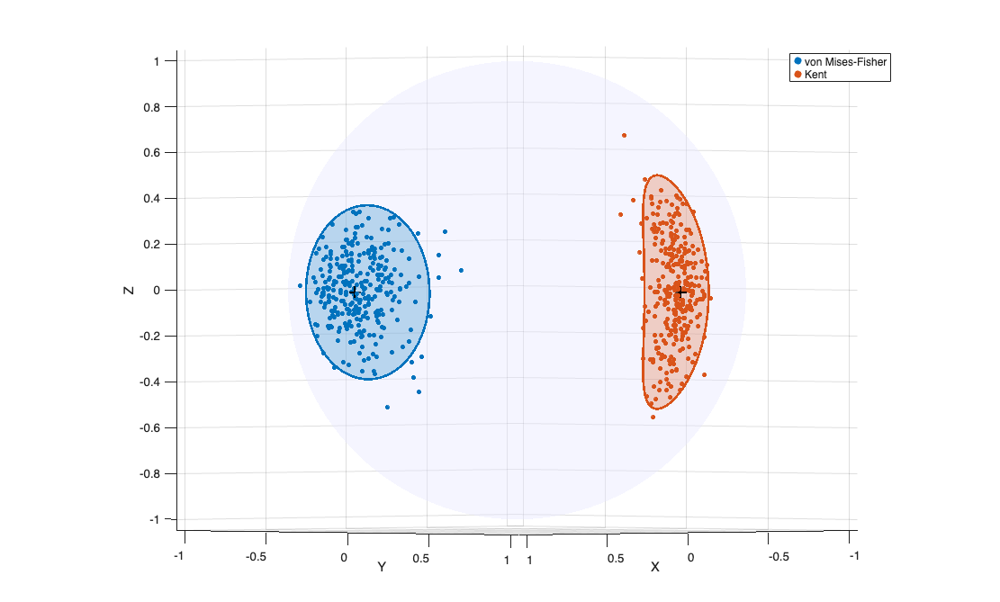
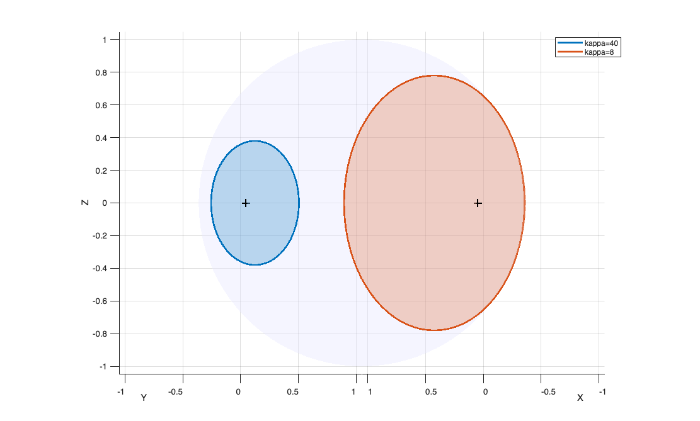
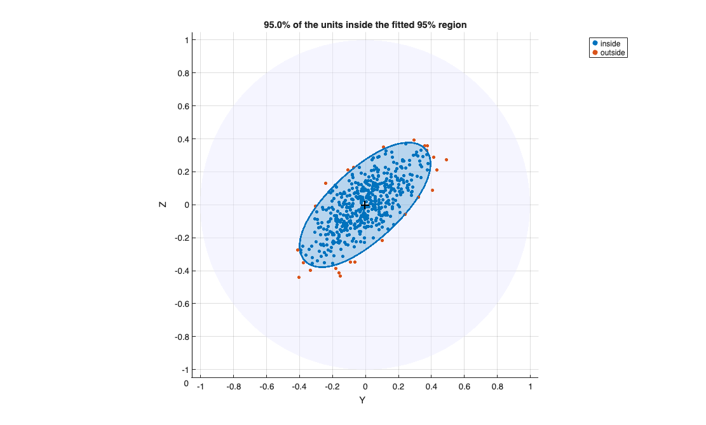

sphereplot
sphereplot plots directional data on the unit circle or on the unit spher
Description
sphereplot displays the rows of the n-by-p matrix Y, which are unit vectors, on the unit circle (p=2) or on the unit sphere (p=3). The units can be coloured according to a grouping variable (for example the classification produced by tclustvmf or tclustkent, where 0 denotes the trimmed units), and the confidence regions of the groups can be superimposed: circular caps for von Mises-Fisher groups, elliptical caps for Kent groups. The regions can be drawn as simple contours or as shaded areas lying on the sphere. When p=3 the sphere can be rotated with the mouse.
sphereplot is the plotting function of all the FSDA functions for directional data: the random number generators vMFrnd and Kentrnd, the functions vMFcap and Kentcap which compute the confidence regions, and the clustering functions tclustvmf and tclustkent. For data in more than 3 dimensions (e.g. embeddings) see sphereprojplot, which projects the data on a 3-dimensional space and then calls sphereplot.
A circular (vMF) and an elliptical (Kent) group with their 95 per cent regions.hax
=sphereplot(Y,
Name, Value)
Examples
 A circular (vMF) and an elliptical (Kent) group with their 95 per cent regions.
A circular (vMF) and an elliptical (Kent) group with their 95 per cent regions.
A circular (vMF) and an elliptical (Kent) group with their 95 per cent regions.. The boundaries are computed with vMFcap and Kentcap and passed as a cell array.
rng(2)
mu = [1 0 0]; kappavmf = 40;
g3 = [0 1 0]; g1 = [0 0 1]; kappa = 80; beta = 32;
Y = [vMFrnd(300, mu, kappavmf); Kentrnd(300, kappa, beta, g3, g1)];
group = [ones(300,1); 2*ones(300,1)];
caps = {vMFcap(mu, kappavmf), Kentcap(g1, [], g3, kappa, beta)};
sphereplot(Y, 'group', group, 'cap', caps, 'center', [mu; g3], ...
'labels', {'von Mises-Fisher','Kent'});
Related Examples
Regions only: a concentrated and a dispersed vMF distribution.
Regions only: a concentrated and a dispersed vMF distribution.No data: only the 95 per cent caps are drawn, and the legend refers to the regions.
cap = struct('mu', [1 0 0; 0 1 0], 'kappa', [40; 8]);
sphereplot([], 'cap', cap, 'labels', {'kappa=40','kappa=8'});
Units inside and outside a fitted region.
Units inside and outside a fitted region.A Kent distribution is fitted to the data; the units outside the fitted 95 per cent region are highlighted.
rng(6)
n = 500;
Y = Kentrnd(n, 80, 30, [1 0 0], [0 1 1]);
[g1,g2,g3,kap,bet] = KentMstepFS(Y, ones(n,1));
[P, thresh] = Kentcap(g1, g2, g3, kap, bet, 0.95);
inside = logKentpdfFS(Y, g1, g2, g3, kap, bet) >= thresh;
sphereplot(Y, 'group', 2 - inside, 'cap', {P}, 'center', g3, ...
'labels', {'inside','outside'});
title(sprintf('%.1f%% of the units inside the fitted 95%% region', 100*mean(inside)))
Input Arguments
Output Arguments
More About
References
Mardia, K.V. and Jupp, P.E. (2000), Directional Statistics, Wiley, Chichester.
Kent, J.T. (1982), The Fisher-Bingham distribution on the sphere, J. Roy. Statist. Soc., B, Vol. 44, pp. 71-80.
See Also
sphereprojplot
|
vMFrnd
|
Kentrnd
|
vMFcap
|
Kentcap
|
tclustvmf
|
tclustkent